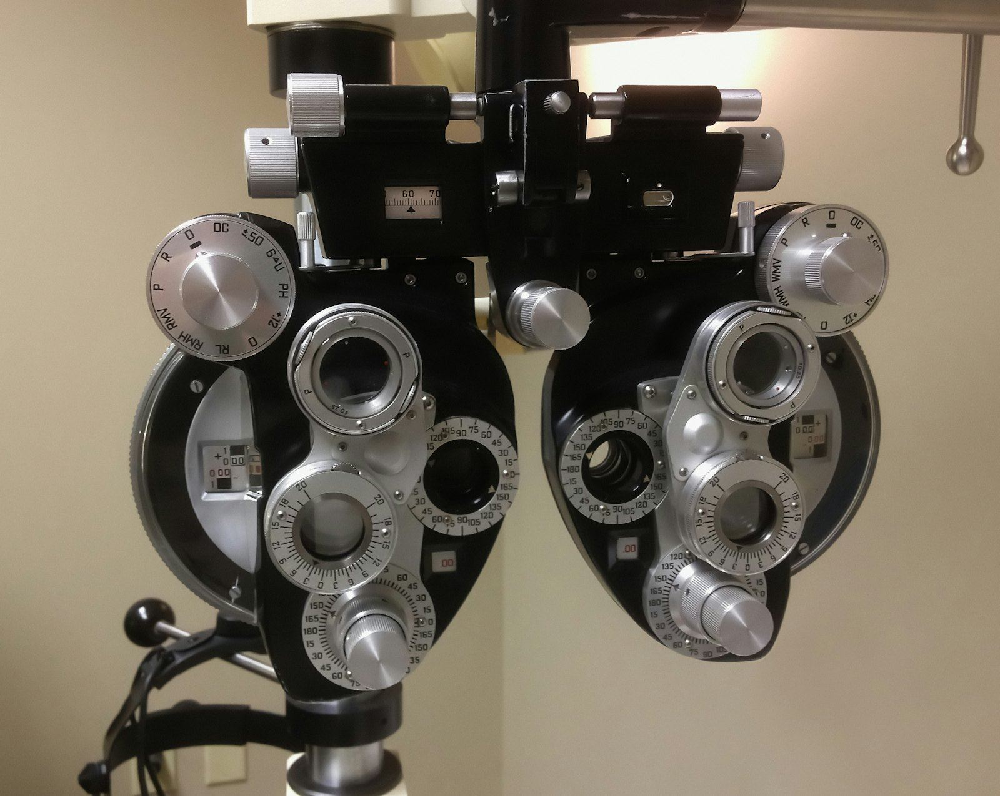
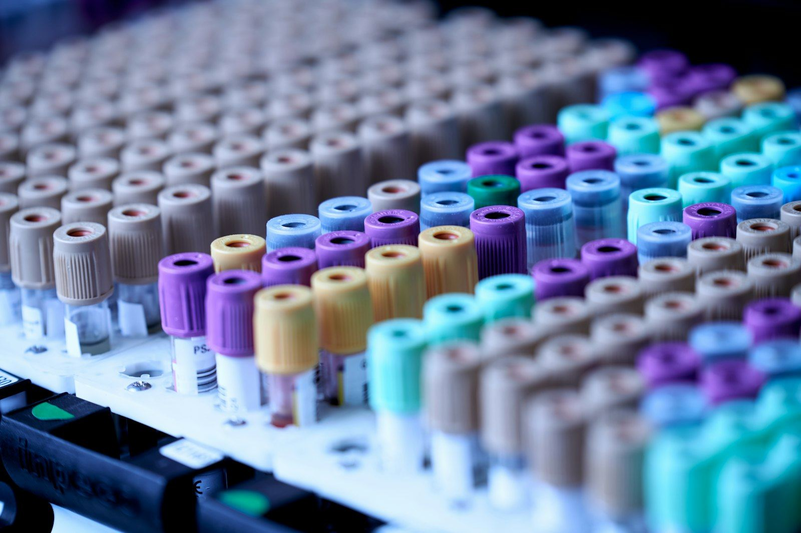

Voir clair, travailler en bonne santé.
Ophtalmologie, médecine du travail, médecine générale et analyses : un seul cabinet, au-dessus de la SEEG de Mbolo.
- Urgences de l'œil reçues dans la journée
- Conventions pour les entreprises

Vos yeux, votre santé, votre travail
Consultation d'ophtalmologie
Le bilan complet de vos yeux : vision, fond d'œil, tension oculaire. Offre consultation + tension oculaire à 10 000 FCFA.
Tension oculaire et dépistage du glaucome
Le glaucome ne fait pas mal mais abîme la vue : une mesure simple permet de le dépister tôt.

Bilan de la vue et lunettes
Mesure précise de votre vue de loin et de près, et prescription de lunettes adaptées.
Visite de médecine du travail
Visites d'embauche, périodiques et de reprise, avec examen de la vue et certificat d'aptitude.
Consultation de médecine générale
Fièvre, fatigue, tension, suivi d'une maladie chronique : un médecin pour toute la famille.

Analyses médicales
Prise de sang et analyses courantes sur place, pour vos consultations et vos bilans d'entreprise.
Votre parcours en 4 étapes
- 1
Prenez rendez-vous
En ligne, par téléphone ou WhatsApp. Les urgences de l'œil sont reçues dans la journée.
- 2
L'accueil
Au-dessus de la SEEG de Mbolo : enregistrement, assurance, mesure de la tension.
- 3
La consultation
Examen, tension oculaire ou prise de sang réalisés sur place.
- 4
Les résultats
Ordonnance, fiche d'aptitude ou compte rendu, expliqués et remis en main propre.
La médecine du travail, simplifiée
Visites d'embauche, périodiques et de reprise, dépistage visuel des conducteurs, bilans sanguins : nous suivons vos salariés au cabinet ou sur votre site.
- Convention annuelle et planning des visites
- Fiches d'aptitude remises rapidement
- Examen de la vue inclus
Protégez votre vue
Après 40 ans
Faites mesurer votre tension oculaire tous les deux ans.
Diabète
Un fond d'œil chaque année protège votre vue.
Écrans
Toutes les 20 minutes, regardez au loin pendant 20 secondes.
Soleil
Portez des lunettes de soleil filtrantes en extérieur.
Ils nous ont fait confiance
« Consultation et tension oculaire pour 10 000 FCFA, accueil rapide. On m'a bien expliqué mon ordonnance de lunettes. »
« Nous y envoyons nos nouveaux employés : visites organisées vite et fiches d'aptitude claires. »
« Prise de sang le matin, résultats le lendemain. Pratique et sérieux. »
L'offre à 10 000 FCFA comprend quoi ?
La consultation d'ophtalmologie et la mesure de la tension oculaire. Les examens complémentaires éventuels vous sont annoncés avant d'être réalisés.
Mes yeux vont-ils être dilatés ?
Parfois, pour examiner le fond de l'œil. La vue reste floue quelques heures : venez accompagné et ne conduisez pas.
Mon entreprise peut-elle signer une convention ?
Oui. Nous organisons les visites d'embauche, périodiques et de reprise de vos salariés, au cabinet ou sur votre site. Demandez un devis sur la page Entreprises.
Quand consulter en urgence ?
Un œil rouge et douloureux, une baisse brutale de la vue ou un choc sur l'œil : appelez-nous le jour même.
Besoin d'une consultation ?
Prenez rendez-vous en ligne, nous vous confirmons le créneau par WhatsApp.